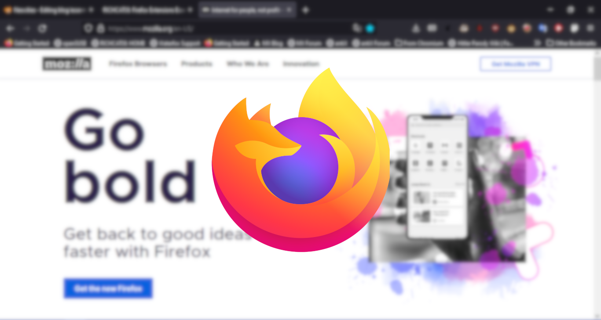

Firefox is a great browser for many reasons, and their massive catalog of addons is one of them!
Today, we'll be covering some essential extensions for your browsing experience on Firefox!
uBlock Origin is one of the best ad blocking extensions out there. It blocks just about every ad out there. There are some advertisers who sign deals with uBlock Origin’s opponent, AdBlock, which is basically extortion. However, uBlock Origin does not allow this because the extension is of an open source nature, something which AdBlock is not at all. Btw, this is not piracy at all. Fuck those people who say stupid shit like that.
UserScripts are amazing, so I recommend a UserScript Manager for your browser. With scripts available at GreasyFork, you could do just about anything from blocking AdBlock detectors to making a webpage look the way you want it to (although I don’t think that’s possible.)
Have you ever tried watching a YouTube video without someone trying to sell you some stupid shit? Well now, it’s possible! With SponsorBlock, you can block those pesky paid segments and watch Linus in peace.
Do you want to browse the web privately without getting tracked by megacorps and monopolies? Privacy Badger does a good job at blocking trackers on websites like Google, Facebook, and Instagram, and you can browse the web in peace, privacy, and quiet.